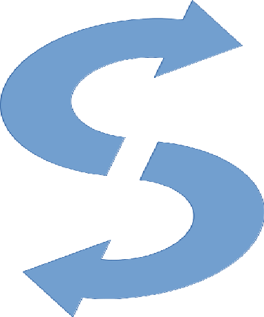
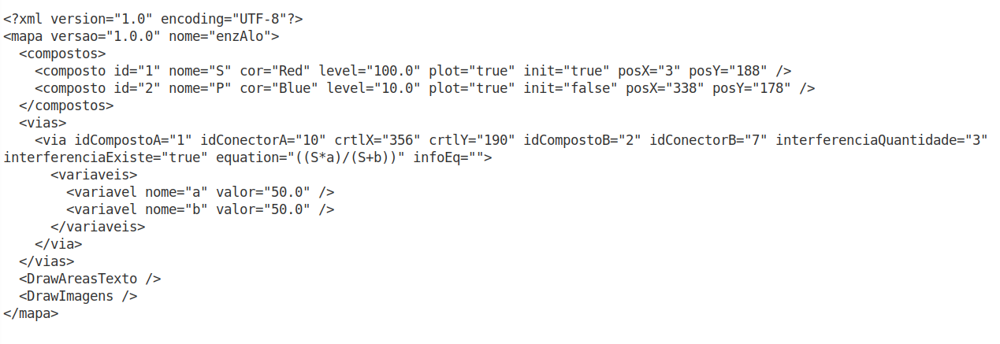
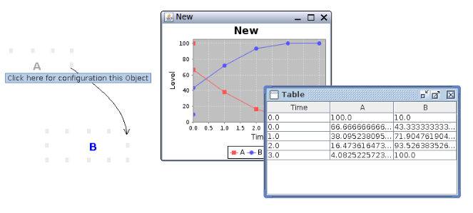
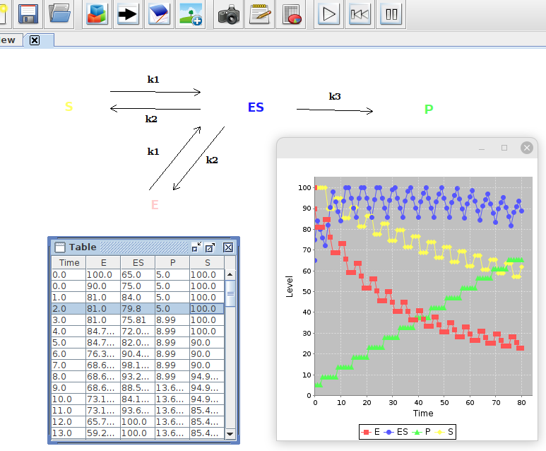
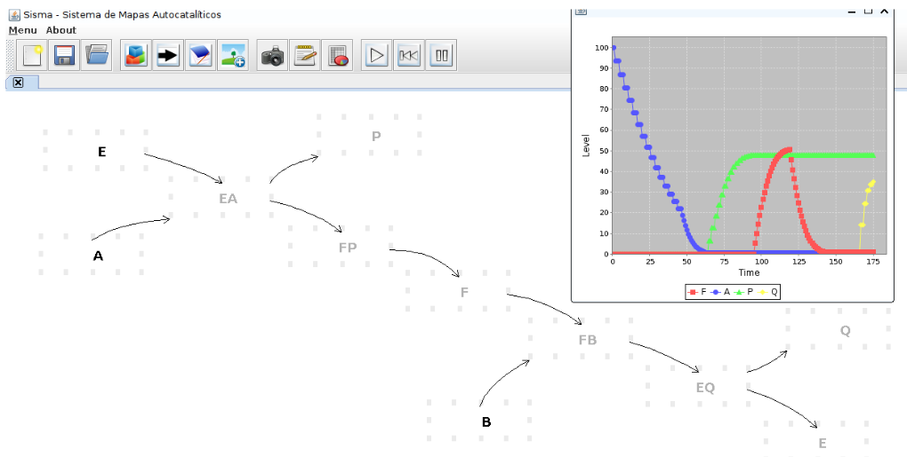
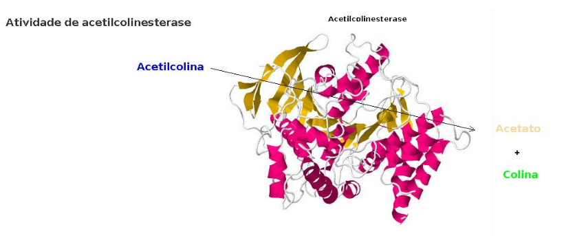

Exemplos de mapas dinâmicos com Sisma

Sisma é um programa elaborado com a proposta de gerar uma imagem dinâmica de transformações ocorridas entre reagentes e produtos de reações isoladas ou em rede, pela simples inserção de compostos (object) interligados por setas (path). Nesse sentido, o programa foi desenhado para facilitar a inserção de reagentes e vias metabólicas, simulando o que se desenharia com um lápis e uma folha de papel em branco.
O programa foi escrito em Java e permite visualizar e avaliar dinamicamente a transformação de reagentes e produtos em uma reação isolada, um fluxo metabólico, ou mapas complexos. O nome Sisma refere-se ao acrônimo para Sistema de Mapas Autocatalíticos. O programa realiza uma simulação visual e quantitativa num mapa de reações, pela percepção de variações na tonalidade dos objetos envolvidos em cada tranformação, tanto a partir de uma equação default, como introduzida pelo usuário. O programa encontra-se sob registro no. 08869-3 junto ao Instituto Nacional de Propriedade Industrial (INPI).
Características do SISMA
Para o estudo das relações entre reagentes e produtos o programa permite a inserção de compostos (Object), caminhos (Path), figuras e anotações no mapa, armazenamento e leitura de mapas, simulação das variações nos teores relativos de cada composto por gráfico de pontos e linhas simultaneamente às que ocorrem no próprio mapa, pausa, interrupção, retrocesso e avanço da visualização a qualquer momento da simulação, geração automática e exportação de planilha contendo os valores numéricos de cada objeto transformado em cada instante, e impressão instantânea do mapa no ponto de uma transformação desejada. Dessa forma, o programa torna dinâmica a visualização de forças e de fluxos que são apresentados de forma estática em diagramas e mapas, tanto em Bioquímica, como para qualquer tema que envolva esse tipo de representação.
À despeito da usabilidade facilitada por mouse, sem a necessidade de inserção de comandos de texto, o Sisma faculta a modificação de todos os elementos do mapa (objetos, caminhos, equações, nomes, cores, posições) por edição do arquivo do mapa em bloco de notas, agregando valor a um Ensino Reprodutível com a ferramenta. A figura abaixo ilustra um arquivo do Sisma aberto num bloco de anotações para edição.

O programa foi desenvolvido em parceria com o Prof. Dr. Luiz Eduardo da Silva, do Departamento de Ciência da Computação (DCC/UNIFAL-MG), e discentes de Iniciação Científica.
Exemplo de telas


 
Download
O arquivo comprimido contendo o programa é obtido neste LINK
Dica rápida de uso !
Para utilizar o Sisma baixe o arquivo do link acima e descompacte-o em seu PC. O programa não requer instalação, apenas máquina virtual JAVA. Para executá-lo, vá para a pasta “dist” e clique no arquivo executável de Java (“Sisma_Realese_1.jar”).
Este tutorial rápido em vídeo ilustra o uso descrito abaixo.
Clique com o botão direito do mouse e selecione Object para inserção de um composto. Repita o último procedimento num outro local da folha em branco do programa, mas desta vez reduzindo a intensidade de cor na barra de rolagem. Agora ligue os dois objetos clicando num vértice de um deles e arrastando o mouse para o vértice de outro. Finalmente, clique em OK e rode a simulação pelo ícone Play, para visualizar a conversão de matizes do primeiro para o segundo objeto.
Ebook
Para inserir objetos e caminhos no Sisma, bem como elaborar, simular e avaliar reações enzimáticas, cadeias ou redes metabólicas dinâmicas, baixe o livro SISMA - Visualização Dinâmica em Catálise & Metabolismo. Seguem alguns exemplos de arquivos para transformações dinâmicas com o Sisma.
Exemplos de mapas dinâmicos com Sisma
Condição de Briggs-Haldane
Assista ao vídeo da reação.
Efeito de Vm e Km
Assista ao vídeo da reação.
Efetor e cooperatividade positiva
Modulador negativo
Ajuste induzido
Glicólise
Metabolismo de carboidratos
Assista ao vídeo da reação.
Mapa metabólico
Assista ao vídeo da reação.
Experimentos Virtuais de Metabolismo
Segue uma sequência de alguns experimentos virtuais passíveis de execução e estudo pelo Sisma.
2. Metabolismo de Carboidratos
SISMA online - SismaWeb !!!
À despeito de sua usabilidade, o programa SISMA requer que seja carregado em computador, o que reduz seu potencial de uso numa era de dispositivos móveis e acesso online. Nesse sentido, uma versão em nuvem está em desenvolvimento junto à equipe, utilizando-se JavaScript com a biblioteca P5.js, preservando-se as funcionalidades existentes na versão standalone do SISMA, e acrescentando outras habilidades.
Um esboço para futuro protótipo pode ser visualizado junto ao endereço SismaWeb.